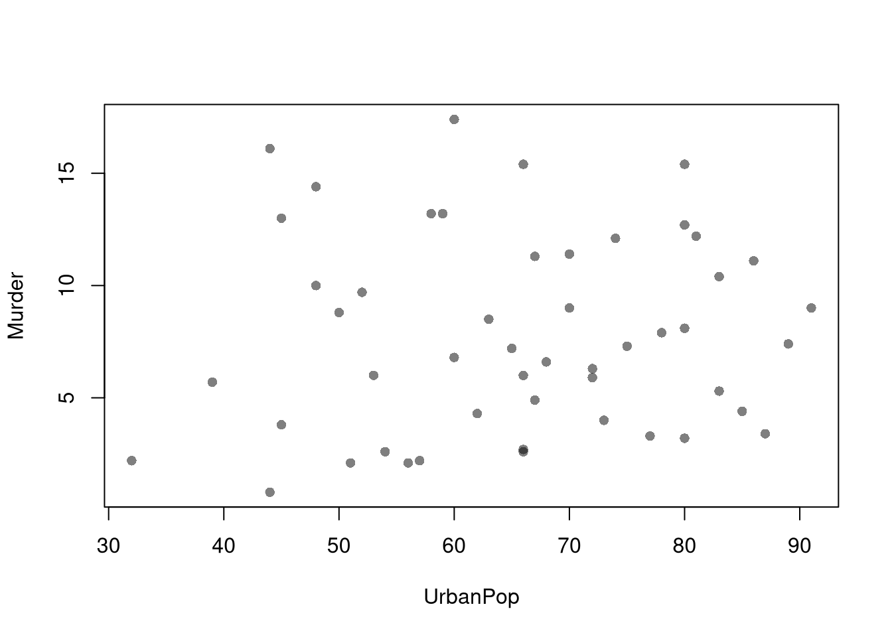
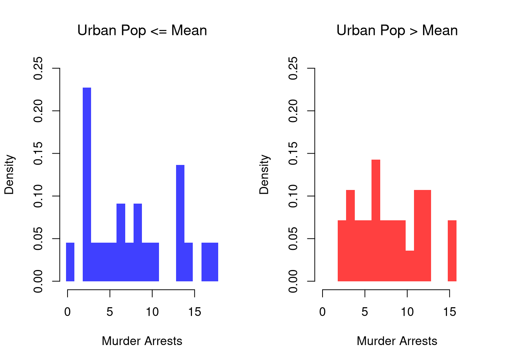
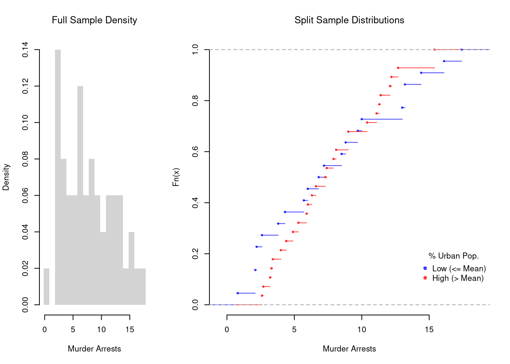
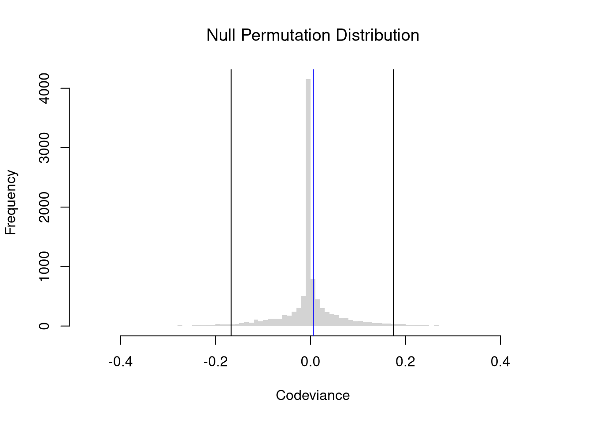

Code
# Bivariate Data from USArrests
xy <- USArrests[,c('Murder','UrbanPop')]
xy[1,]
## Murder UrbanPop
## Alabama 13.2 58We will now study two variables. The data for each observation data can be grouped together as a vector \((\hat{X}_{i}, \hat{Y}_{i})\).
# Bivariate Data from USArrests
xy <- USArrests[,c('Murder','UrbanPop')]
xy[1,]
## Murder UrbanPop
## Alabama 13.2 58We have multiple observations of \((\hat{X}_{i}, \hat{Y}_{i})\), each of which corresponds to a unique value \((x,y)\). A frequency table shows how often each combination of values appear. The joint distribution counts up the number of pairs with the same values and divides by the number of obersvations, \(n\); \[\begin{eqnarray} \hat{p}_{xy} = \sum_{i=1}^{n}\mathbf{1}\left( \hat{X}_{i}=x, \hat{Y}_{i}=y \right)/n, \end{eqnarray}\] The marginal distributions are just the univariate information, which can be computed independently (see here ) and also from the joint distribution \[\begin{eqnarray} \hat{p}_{x} = \sum_{y} \hat{p}_{xy} \end{eqnarray}\]
For example, suppose we observe a sample of \(n=13\) students with two discrete variables:
Assume the count data are summarized by the following table:
\[\begin{array}{c|cc|c} & y=0\ (\text{male}) & y=1\ (\text{female})\\ \hline x=12 & 4 & 3 \\ x=14 & 1 & 5 \\ \hline \end{array}\] The joint distributions divides each cell count by the total number of observations to obtain \[\begin{array}{c|cc} & y=0 & y=1\\ \hline x=12 & 4/13 & 3/13 \\ x=14 & 1/13 & 5/13 \end{array}\]The marginal distribution of \(X_{i}\) is \[\begin{eqnarray} \hat{p}_{x=12} &=& \frac{4}{13} + \frac{3}{13} = \frac{7}{13},\\ \hat{p}_{x=14} &=& \frac{1}{13} + \frac{5}{13} = \frac{6}{13}. \end{eqnarray}\] The marginal distribution of \(Y_{i}\) is \[\begin{eqnarray} \hat{p}_{y=0} &=& \frac{4}{13} + \frac{1}{13} = \frac{5}{13} \approx 0.38,\\ \hat{p}_{y=1} &=& \frac{3}{13} + \frac{5}{13} = \frac{8}{13} \approx 0.62. \end{eqnarray}\]
Together, this yields a frequency table with marginals \[\begin{array}{c|cc|c} & y=0\ (\text{male}) & y=1\ (\text{female}) & \text{Row total}\\ \hline x=12 & 4/13 & 3/13 & 7/13\\ x=14 & 1/13 & 5/13 & 6/13\\ \hline \text{Column total} & 5/13 & 8/13 & 1 \end{array}\]# Simple hand-built dataset: 13 students
dat <- rbind(
c(12, 0), c(12, 0), c(12, 0), c(12, 0), #Male
c(14, 0),
c(12, 1), c(12, 1), c(12, 1),
c(14, 1), c(14, 1), c(14, 1), c(14, 1), c(14, 1))
colnames(dat) <- c('educ', 'female')
dat <- as.data.frame(dat)
# Frequency table
tab <- table(dat) # counts
prop <- tab/sum(tab) # joint distribution p_xy
# joint distribution with marginals added
prop_m <- addmargins(prop)
round(prop_m,2)
## female
## educ 0 1 Sum
## 12 0.31 0.23 0.54
## 14 0.08 0.38 0.46
## Sum 0.38 0.62 1.00Note that you can compute various univariate statistics using the marginal distributions. E.g., the mean of \(\hat{X}_{i}\) is \(\hat{M}_{X}=\sum_{x} x \hat{p}_{x}\). In the the above example, that equals \(12 \frac{7}{13} + 14\frac{6}{13} \approx 12.9\). Try computing the standard deviation \(\hat{S}_{X}\) yourself.
# marginals and univariate statistics
p_x <- margin.table(prop, 1)
sum(p_x* as.numeric(names(p_x)) )
## [1] 12.92308
mean(dat[,1])
## [1] 12.92308
# p_y <- margin.table(prop, 2)Scatterplots are used frequently to summarizes the joint distribution of continuous data. They can be enhanced in several ways. As a default, use semi-transparent points so as not to hide any points (and perhaps see if your observations are concentrated anywhere). You can also add other features that help summarize the relationship, although I will defer this until later.
plot(Murder~UrbanPop, USArrests, pch=16, col=grey(0.,.5))
You can also show the marginal distributions of each variable along each axis.
# Setup Plot
layout( matrix(c(2,0,1,3), ncol=2, byrow=TRUE),
widths=c(9/10,1/10), heights=c(1/10,9/10))
# Scatterplot
par(mar=c(4,4,1,1))
plot(Murder~UrbanPop, USArrests, pch=16, col=rgb(0,0,0,.5))
# Add Marginals
par(mar=c(0,4,1,1))
xhist <- hist(USArrests[,'UrbanPop'], plot=FALSE)
barplot(xhist[['counts']], axes=FALSE, space=0, border=NA)
par(mar=c(4,0,1,1))
yhist <- hist(USArrests[,'Murder'], plot=FALSE)
barplot(yhist[['counts']], axes=FALSE, space=0, horiz=TRUE, border=NA)
In contrast to marginal and joint distributions, conditional distributions describe how the distribution of one variable changes when we restrict attention to a subgroup defined by another variable. Formally, if \(\hat{p}_{xy}\) denotes the empirical joint distribution, then the empirical conditional distribution of \(Y_{i}\) given \(X_{i}=x\) is \[\begin{eqnarray} \hat{p}_{y \mid x} = \frac{\hat{p}_{xy}}{\hat{p}_{x} }, \end{eqnarray}\] where \(\hat{p}_{x} = \sum_y \hat{p}_{xy}\).
For example, suppose we observe a sample of \(n=13\) students with two discrete variables:
Assume the count data are summarized by the following frequency table:
\[\begin{array}{c|cc|c} & y=0\ (\text{male}) & y=1\ (\text{female}) & \text{Row total}\\ \hline x=12 & 4/13 & 3/13 & 7/13\\ x=14 & 1/13 & 5/13 & 6/13\\ \hline \text{Column total} & 5/13 & 7/13 & 1 \end{array}\]We will compute the conditional distribution of \(Y_{i}\) given \(X_{i}=x\). For \(x=12\), we compute \[\begin{eqnarray} \hat{p}_{y=0 \mid x=12} &=& \frac{\hat{p}_{x=12, y=0}}{\hat{p}_{x=12}} = \frac{4/13}{7/13} = \frac{4}{7} \approx 0.57. \\ \hat{p}_{y=1\mid x=12} &=& \frac{\hat p_{x=12, y=1}}{\hat{p}_{x=12}} = \frac{3/13}{7/13} = \frac{3}{7} \approx 0.43. \end{eqnarray}\] Similarly, for \(x=14\), we compute \[\begin{eqnarray} \hat{p}_{y=0 \mid x=14} &=& \frac{\hat{p}_{x=14, y=0}}{\hat{p}_{x=14}} = \frac{1/13}{6/13} = \frac{1}{6} \approx 0.17. \\ \hat{p}_{y=1\mid x=14} &=& \frac{\hat p_{x=14, y=1}}{\hat{p}_{x=14}} = \frac{5/13}{6/13} = \frac{5}{6} \approx 0.83. \end{eqnarray}\]
In this example, we say that
We can also compute the conditional distribution of \(X_{i}\) given \(Y_{i}=y\), \(\hat{p}_{x \mid y} = \hat{p}_{xy} / \hat{p}_{y}\),just as we did above.
Conditional distributions change the unit of analysis:
These describe the relationship between \(\hat{Y}_{i}\) and \(\hat{X}_{i}\). We show how \(Y\) changes according to \(X\) using a histogram or bar plot. When \(X\) is continuous, as it often is, we split it into distinct bins and convert it to a factor variable. E.g.,
# Split Data by Urban Population above/below mean
pop_mean <- mean(USArrests[,'UrbanPop'])
pop_cut <- USArrests[,'UrbanPop'] <= pop_mean
murder_lowpop <- USArrests[pop_cut,'Murder']
murder_highpop <- USArrests[!pop_cut,'Murder']
cols <- c(low=rgb(0,0,1,.75), high=rgb(1,0,0,.75))
# Common Histogram
ylim <- c(0,.25)
xbks <- seq(min(USArrests[,'Murder'])-1, max(USArrests[,'Murder'])+1, by=1)
par(mfrow=c(1,2))
hist(murder_lowpop,
breaks=xbks, col=cols[1],
main='Urban Pop <= Mean', font.main=1,
xlab='Murder Arrests', freq=F,
border=NA, ylim=ylim)
hist(murder_highpop,
breaks=xbks, col=cols[2],
main='Urban Pop > Mean', font.main=1,
xlab='Murder Arrests', freq=F,
border=NA, ylim=ylim)
It is sometimes it is preferable to show the ECDF instead. And you can glue various combinations together to convey more information all at once
layout( t(c(1,2,2)))
# Full Sample Density
hist(USArrests[,'Murder'],
main='Full Sample Density', font.main=1,
xlab='Murder Arrests',
breaks=xbks, freq=F, border=NA)
# Split Sample Distribution Comparison
F_lowpop <- ecdf(murder_lowpop)
plot(F_lowpop, col=cols[1],
pch=16, xlab='Murder Arrests',
main='Split Sample Distributions',
font.main=1, bty='n')
F_highpop <- ecdf(murder_highpop)
plot(F_highpop, add=T, col=cols[2], pch=16)
legend('bottomright', col=cols,
pch=16, bty='n', inset=c(0,.1),
title='% Urban Pop.',
legend=c('Low (<= Mean)','High (> Mean)'))
# Simple Interactive Scatter Plot
# plot(Assault~UrbanPop, USArrests, col=grey(0,.5), pch=16,
# cex=USArrests[,'Murder']/diff(range(USArrests[,'Murder']))*2,
# main='US Murder arrests (per 100,000)')You can also split data into more than two groups. For more than three groups, boxplots are often more effective than histograms or ECDF’s.
# K Groups with even spacing (not even counts)
K <- 4
USArrests[,'UrbanPop_Kcut'] <- cut(USArrests[,'UrbanPop'],K)
table(USArrests[,'UrbanPop_Kcut'] )
##
## (31.9,46.8] (46.8,61.5] (61.5,76.2] (76.2,91.1]
## 6 13 17 14
# Full sample
#boxplot(USArrests[,'Murder'], main='',
# xlab='All Data', ylab='Murder Arrests')
# Boxplots for each group
Kcols <- hcl.colors(K,alpha=.5)
boxplot(Murder~UrbanPop_Kcut, USArrests,
main='', col=Kcols,
varwidth=T, #show number of obs. per group
xlab='Urban Population', ylab='')
# 4 Groups with equal numbers of observations
#Qcuts <- c(
# '0%'=min(USArrests[,'UrbanPop'])-10*.Machine[['double.eps']],
# quantile(USArrests[,'UrbanPop'], probs=c(.25,.5,.75,1)))
#USArrests[,'UrbanPop']_cut <- cut(USArrests[,'UrbanPop'], Qcuts)
#boxplot(Murder~UrbanPop_cut, USArrests, col=hcl.colors(4,alpha=.5))Conditional distributions can be tricky, so take your time making and interpreting them.
Consider the following example, which shows that \(400\) men and \(400\) women applied to university and that only a share were accepted in each department (English or Engineering). If you computed percents for each sex within each cell, you would find men have a higher overall acceptance rate, but women have higher acceptance rates within each department! This counterintuitive phenomena is known as Simpson’s Paradox, and the example is part of a real debate about discrimination (http://homepage.stat.uiowa.edu/~mbognar/1030/Bickel-Berkeley.pdf).
Even if women have higher admission rates within both departments, women can still have a lower overall admission rate if women disproportionately apply to the more selective department (English) and men disproportionately apply to the less selective department (Engineering). The same issue is relevant for a variety of labor market issues, such as the gender pay gap, and a great many other social issues, such as why are some countries rich and others poor.1
| Department | Men | Women | Total |
|---|---|---|---|
| English | 100 (40, \(40\%\)) | 350 (150, \(43\%\)) | 450 (190, \(42\%\)) |
| Engineering | 300 (160, \(53\%\)) | 50 (30, \(60\%\)) | 350 (190, \(54\%\)) |
| Total | 400 (200, \(50\%\)) | 400 (180, \(45\%\)) | 800 (380, \(48\%\)) |
The same issue shows up in continuous data. Here is an example where the overall relationship differs from the relationship within each group.

For plotting histograms and marginal distributions, see
In general, one should also remember that a ratio can change due changes in either the numerator or the denominator.↩︎